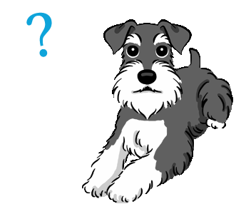

El schnauzer es uno de los perros mas queridos como mascota, no solo por su aspecto peludo tan peculiar, sino tambien por su personalidad inteligente, sociable y fiel. Como su nombre nos indica, el origen de esta raza se ubica en Alemania; sin embargo, todavia existe cierto debate acerca de las circunstancias y la mezcla de razas que dieron lugar al schnauzer actual.
El nombre de esta raza deriva de la palabra alemana schnauzer, que significa "hocico" y que se aplicaba a estos perros por su caracteristica barba hirsuta que los distinguia de los pinschers. Durante muchos anos se considero que eran un tipo determinado de pinschers, pues esta es la raza que les dio origen. De hecho era bastante habitual ver cachorros de pelo duro (schnauzers) y de pelo corto (pinschers) en una misma camada.

Durante los primeros dias, la raza Schnauzer fue utilizada, a menudo, como perro de guardia por los agricultores y comerciantes. Les gustaba la naturaleza protectora del Schnauzer y los utilizaban para cuidar sus carros. Junto con ser un perro guardian, el Schnauzer tambien fue utilizado como perro ratonero (un perro que se utiliza para perseguir y atrapar ratas). La raza Schnauzer gigante fue el ultimo Schnauzer en originarse. Al principio, estos grandes Schnauzers gigantes fueron utilizados por los agricultores con fines de pastoreo. Sin embargo, tambien se utilizaron como perros de guardia, de nuevo, debido a su naturaleza protectora. Hoy en dia la raza Schnauzer todavia muestra muchas de las caracteristicas de sus primeros antepasados. Siguen siendo muy valientes, protectores y leales. Todos los rasgos que todavia los hacen una opcion de mascota muy popular.
Existen tres tipos, se dividen en miniatura (30-38 cm.), estandar (50 cm.), y gigante (71 cm).
Su nombre se deriva del termino Schnauze y Schnauzbart en aleman, que significan hocico y bigote.
Son muy territoriales y pueden llegar a ser bastante celosos con sus humanos.
Se distinguen por ser melosos, juguetones y traviesos.
Son considerados perros deportistas, pues poseen importantes habilidades, mucha energia, inteligencia y rapidez.
Los bigotes son una de sus principales caracteristicas y tienen una funcion protectora cuando estan cazando.